ഹരേ കൃഷ്ണ
കക്കംവെള്ളി
ശ്രീകൃഷ്ണ ക്ഷേത്രം
Kakkamvelly Sreekrishna Temple
പുറമേരി, കോഴിക്കോട്, കേരളം
ക്ഷേത്ര വിവരം പങ്കിടുകക്ഷേത്ര സമയക്രമവും പൂജ ഷെഡ്യൂളും
രാവിലെ (പ്രഭാത പൂജ)
| പൂജ | സമയം |
|---|---|
| നിർമ്മാല്യദർശനം | 5:30 AM |
| ഉഷ പൂജ | 6:00 AM |
| ദീപാരാധന | 8:00 AM |
| നട അടക്കൽ | 9:00 AM |
വൈകുന്നേരം (സായഹ്ന പൂജ)
| പൂജ | സമയം |
|---|---|
| ദീപാരാധന | 5:45 PM |
| നട അടക്കൽ | 6:45 PM |
ക്ഷേത്ര തുറക്കൽ സമയം
ഉത്സവ ദിനങ്ങളിൽ സമയക്രമം മാറ്റം വരാം. വിഷു 2026 (ഏപ്രിൽ 15): 5:00 AM – 7:30 PM (Special). ക്ഷേത്ര ഓഫീസ്: +91 94468 44145 · തിരുമേനി: +91 99412 92222
അമ്പലം കുളം നവീകരണം
Temple Pool Renovation Project
ക്ഷേത്ര കുളത്തിൻ്റെ ചരിത്രപരമായ നവീകരണ പ്രവൃത്തി ആരംഭിച്ചിരിക്കുന്നു.
വർഷങ്ങളായി ഉപേക്ഷിക്കപ്പെട്ട കുളം ഇപ്പോൾ ആയിരക്കണക്കിന്
ഭക്തരുടെ കൂട്ടായ്മ ശ്രമഫലമായി പുനർജനിക്കുകയാണ്.
Your support makes this possible — ₹47 lakhs needed for full restoration.
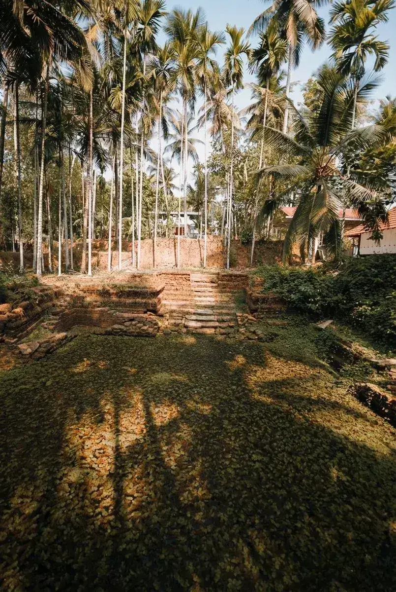
കുളം — പഴയ അവസ്ഥ
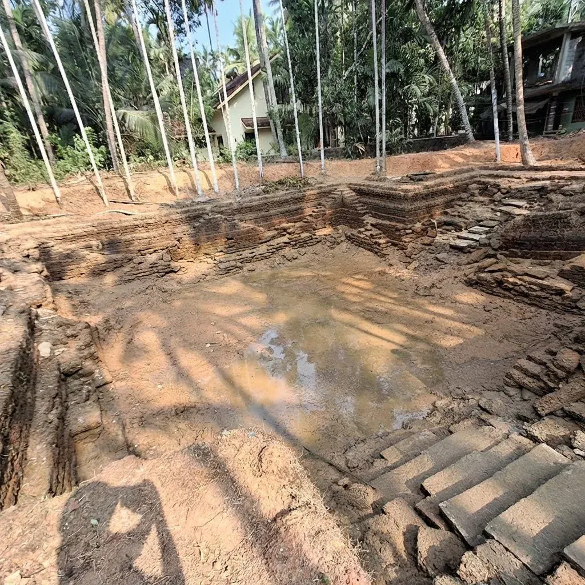
കുഴിക്കൽ ഘട്ടം
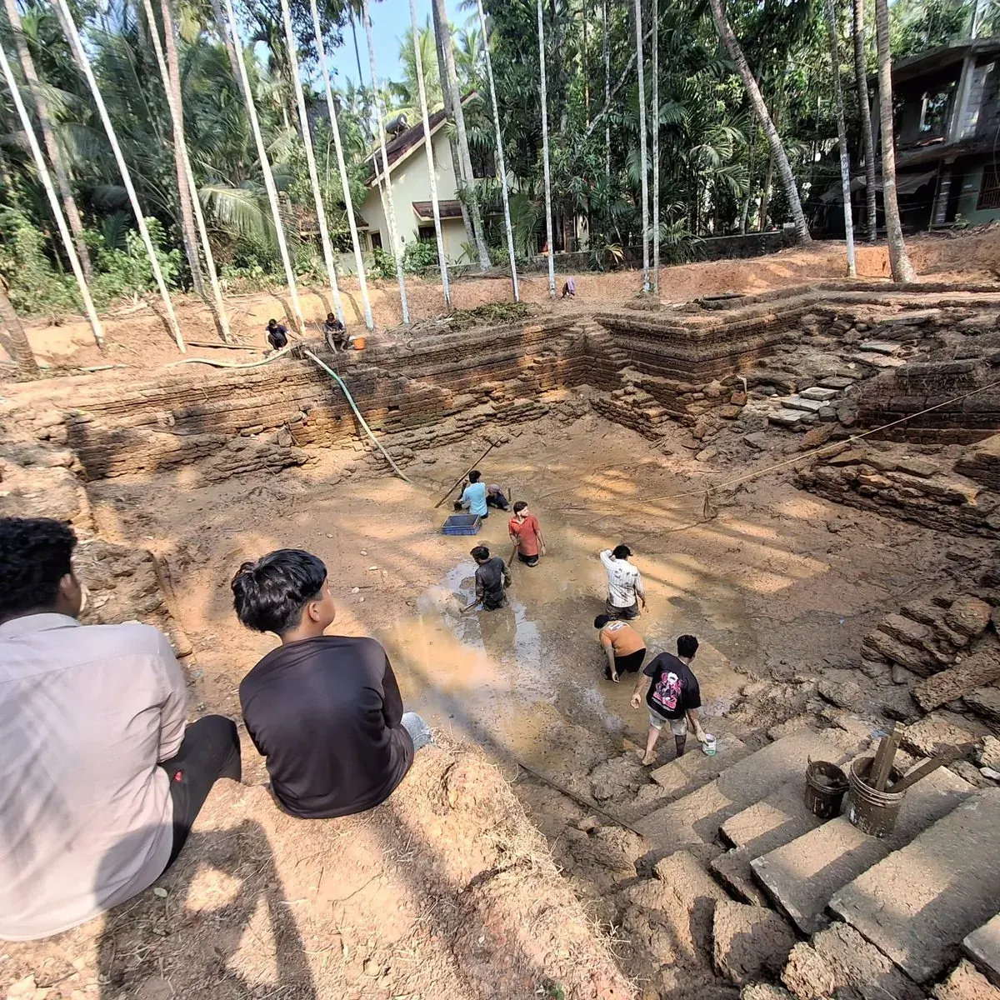
ഭക്തർ ഒന്നിച്ച്
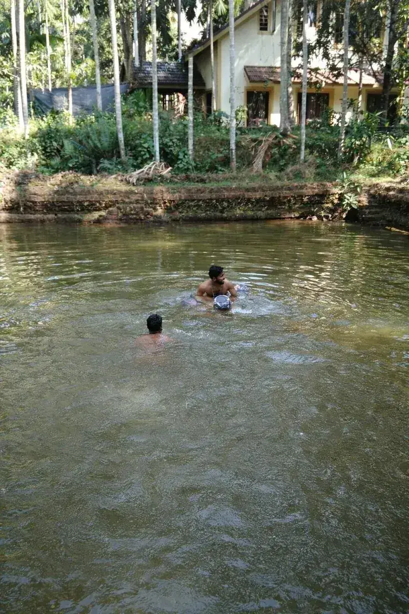
പഴയകാല മഴക്കാല ദൃശ്യം
Support Temple Renovation
🏗️ Renovation starts in
UPI QR Code
kakkamvellytemple@upi
UPI ID
kakkamvellytemple@upi
🙏 ഈ ദൈവകാര്യത്തിൽ പങ്കാളിയാകൂ — ₹47 ലക്ഷം ആവശ്യമുണ്ട്
ക്ഷേത്രത്തെ കുറിച്ച്
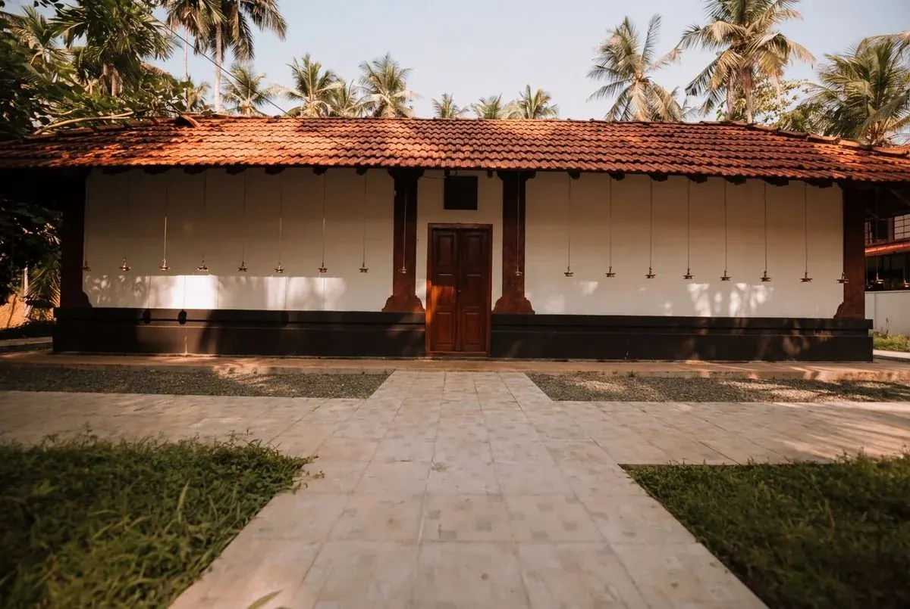
ഉണ്ണിക്കൃഷ്ണന്റെ പുണ്യ ഭൂമി
A small but beautiful temple — once destroyed during Tippu Sultan's rampage through Malabar — Kakkamvelly Sreekrishna Temple stands today as a symbol of enduring faith and devotion. Renovated and lovingly maintained by the local community, it is now a serene place for prayer and worship.
ടിപ്പുവിന്റെ ആക്രമണത്തിൽ തകർന്നിട്ടുണ്ടായ ഈ ക്ഷേത്രം ഇന്ന് സമാധാനത്തിന്റെയും ഭക്തിയുടെയും ഒരു പ്രതീകമായി നിലനിൽക്കുന്നു. ഗുരുവായൂരിലെ പ്രതിമയെ ഓർമ്മിപ്പിക്കുന്ന കുട്ടികൃഷ്ണന്റെ രൂപത്തിൽ പ്രതിഷ്ഠിതനായ ഭഗവാൻ കൃഷ്ണൻ, ഭക്തിയോടെ പ്രാർത്ഥിക്കുന്നവരുടെ ആഗ്രഹങ്ങൾ സാക്ഷാത്കരിക്കുന്നു എന്ന് വിശ്വസിക്കുന്നു.
The presiding deity is Lord Krishna in his childhood form — Little Krishna (ഉണ്ണിക്കൃഷ്ണൻ). Many devotees believe the idol here resembles the sacred form at the famous Guruvayur Temple. A powerful idol who fulfils the wishes of those who believe in him with a whole heart. 🙏
This is a quiet, intimate temple — there are no vedikkett (fireworks) during festivals, and elephants are not part of the celebrations here. What you will find is pure, peaceful devotion.
ക്ഷേത്ര ചിത്രങ്ങൾ
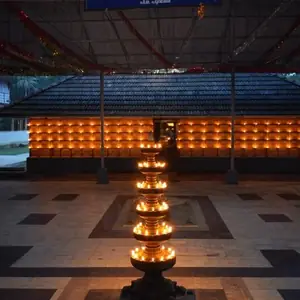
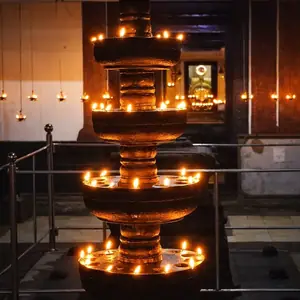
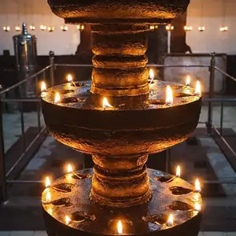
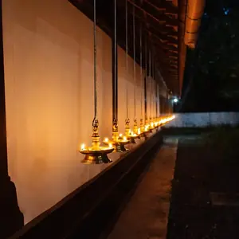
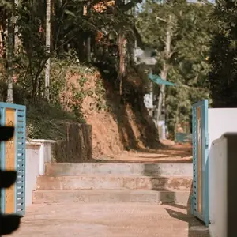
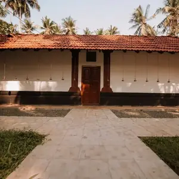
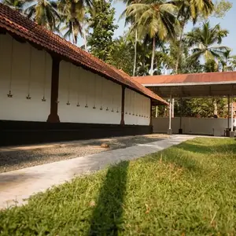
സ്ഥലവും വഴിക്കുറിപ്പും
എങ്ങനെ എത്തിച്ചേരാം
കക്കംവെള്ളി ശ്രീകൃഷ്ണ ക്ഷേത്രം,
പുറമേരി, കോഴിക്കോട്, കേരളം – 673503
കക്കംവെള്ളി ശ്രീകൃഷ്ണ ക്ഷേത്രം
പുറമേരി, കോഴിക്കോട്, Kerala 673503
Kakkamvelly Sreekrishna Temple · Purameri